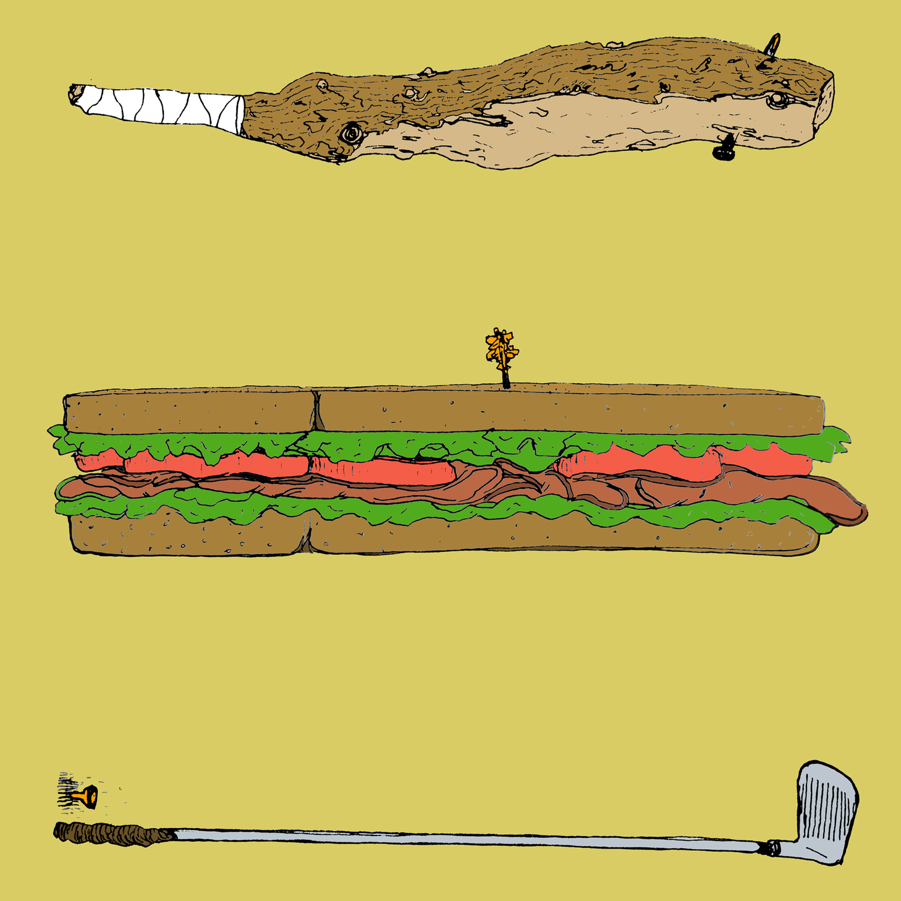

The Ethics of Civil Disobedience
Teaching
This course examines the phenomenon of civil disobedience from a moral perspective.
We take up such questions as: does a citizen have an obligation to follow the laws of the state, no matter what those laws dictate? If we accept the latter, just what kinds of breaches of law can be justified, and under what circumstances? Is an individual's conscience admissible as such a justification? Is a violent act of disobedience ever justified? Accordingly, we touch upon many concrete issues, both historically proximate and distant: the civil rights movement, 20th century pacifism and draft refusal, ACT UP, the Black Bloc, the cases of Edward Snowden and Chelsea Manning, Hacktivism and Anonymous, Occupy, and the carré rouge movement in Quebec.This class asked students to find and interview a participant who uses direct action in their political practice (i.e., an activist) about themes from the course.
Taught at
- McGill University in Montreal, QC (2014)